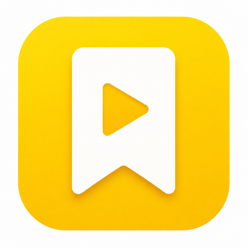

Watchlist multi-media
Serie, film, video YouTube e podcast — voti, commenti e stato di visione, senza dover ricordare dove hai lasciato ogni cosa.
Cerchi un titolo, lo aggiungi alla tua libreria in uno dei tre stati — da vedere, in corso, visto — e per le serie lo stato si aggiorna da solo man mano che segni gli episodi. Ogni titolo può avere un voto da 0 a 5 stelle e un tuo commento personale.
Serie TV, film, canali YouTube e podcast — tutti nella stessa libreria, con la stessa logica.
0-5 stelle e una nota personale per ogni titolo — il tuo diario critico, non un feed pubblico.
Cosa hai visto e quando, con un riepilogo delle tue abitudini di visione.
Tutto resta sul telefono — l'accesso con Apple o Google serve solo per riconoscerti, non per raccogliere dati.
Per le serie, "in corso" e "visto" si calcolano da soli in base agli episodi che segni.
App completamente localizzata, cambi lingua dalle impostazioni.
Privacy prima di tutto — nessun account con password, nessun server con i tuoi dati: solo un'identità stabile per riconoscerti, il resto vive sul tuo dispositivo.